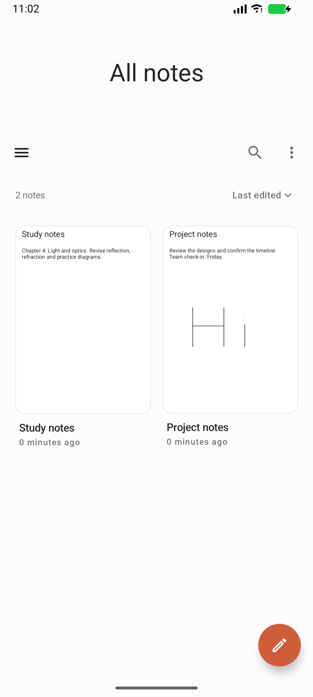
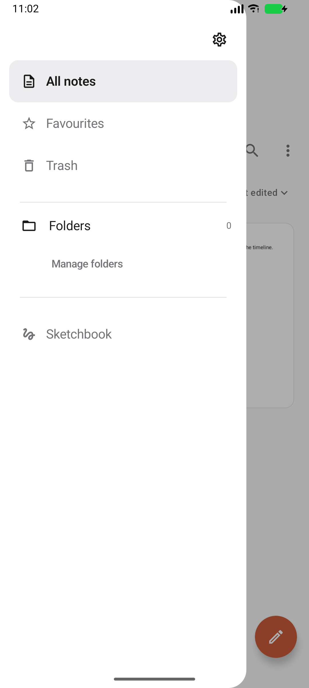
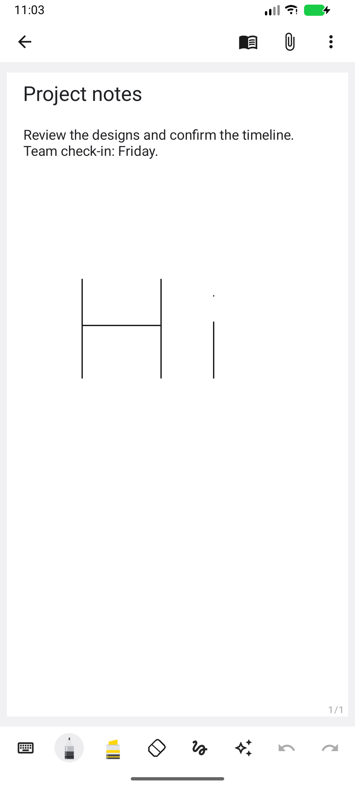
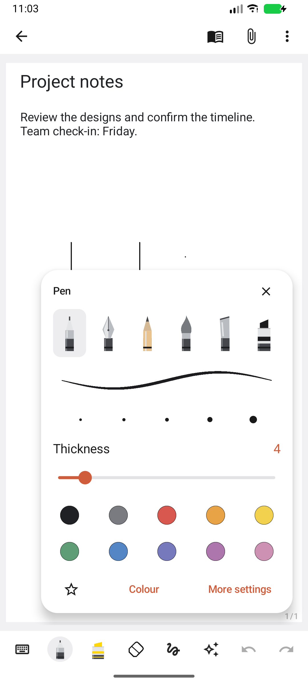
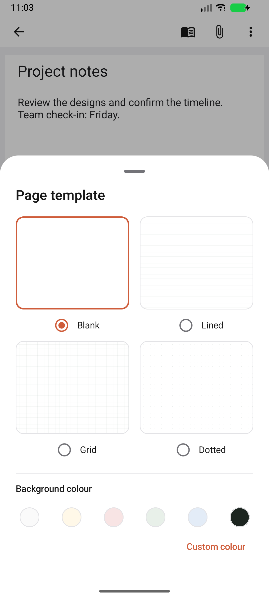
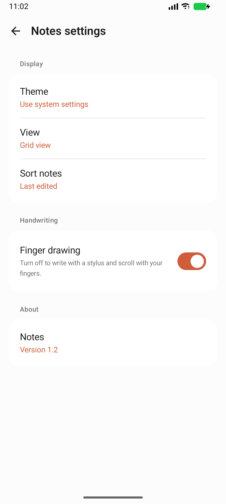

Latest: Notes 1.3 editor features and collaboration validation.
15 October 2026 · Version 1.2 (18). This pass reconstructs the library, navigation, settings, page previews and contextual controls around the supplied Samsung Notes 4.4.13.5 APK and Samsung’s published interface references.
| Surface | Result |
|---|---|
| Library | Large centered heading collapses while scrolling. Compact navigation/search/options row, sort label, portrait page covers, titles and dates beneath previews, grid/list views, simple empty state and one create-note button. A long press opens a selection state with Move, Favourite and Delete at the bottom; All selects the visible notes. |
| Drawer | Settings at the top, restrained selected row, All notes, Favourites, Trash, coloured folders and Manage folders. Standalone sketchbook stays accessible below the main navigation. |
| Page previews | The renderer now produces a miniature first page with actual coordinates and margins, rather than cropping tightly around the ink. Preview cache identity changes with the note’s modification timestamp. Opening a later page does not replace the note’s cover. |
| Editor | Compact back/read/insert/options header. Reading mode suppresses drawing controls and blocks ink input. Main options lead to Share, Save as file, Page template, Pages, finger drawing, full screen and More tools; advanced actions are grouped into submenus. |
| Pens | Six nib choices, stroke preview rendered by the actual pressure engine, quick thickness presets, slider, colour swatches and favourite toggle. Ballpoint and fountain have independent settings, as do pencil, brush, calligraphy and marker. Their configurations survive switching and restart. |
| Paper and settings | Four visual template choices show the actual ruling renderer; six background colours plus a custom picker. Settings uses grouped summary rows and selection dialogs for theme, view and sorting, with a working finger-drawing switch. |






The supplied APK is samsung_app/com-samsung-android-app-notes-441305000-66619618-f55181590929562add51a7315f3c5f7d.apk, SHA256 A5A2B8BA1F4E7E5E047480F5571ACD4DC5274AF91B166F6339082D1C3A88E5E7. Existing static analysis is retained in the ignored samsung_app/analysis directory. The APK declares ARM native libraries (arm64-v8a, armeabi-v7a and armeabi); its UI has not been executed on the x86_64 review emulator. Static resources establish packaged values, not observed runtime behaviour.
Relevant resource observations: noteslist_fragment_bg_color and mainlist_noteslist_backgroud_color are #FCFCFC in the default configuration; noteslist_item_bg_radius is 12dp; noteslist_fab_size is 56dp (60dp at sw600dp). Public screenshots guide the navigation and control hierarchy; they may show a different Samsung Notes release.
Samsung references: Organize notes and PDFs, Features and settings, and Pen types and colours. Reference images are retained only for local review and are not application assets. REA’s Android provider was unavailable in the earlier investigation; the preserved fallback inspection uses AAPT2 and JADX. No successful REA Evidence record is claimed.
The full suite passed: 12 JVM tests and 30 Android tests (42 total, zero failures), recorded in build-ui-reconstruction-final.log. After the final slider/header styling, all four affected UI tests passed again, recorded in build-ui-reconstruction-controls.log. Checks cover actual rendered ink, pen preset persistence after restart, first-page cover coordinates, search, multi-selection/favourites, reading mode, template undo, save/reopen, legacy migration, PDF output and input handling. Final lint: 0 errors, 75 warnings. The test logs are local ignored build artifacts.
APK: C:\Users\vardh\AndroidStudioProjects\Notepad\app\build\outputs\apk\debug\app-debug.apk. SHA256: E549379684002CBDD47C0D6B2111E44B0A158F62F5D827B5B7A8D5BB0BA7486B. Installed-build screenshots above show the reconstructed application, not Samsung screenshots.
Samsung account/cloud, Samsung .sdoc/.sdocx compatibility, AI features, image OCR, transcription, Office export, widgets, screen-off memo and Samsung-specific device gestures are not implemented. Rich text uses positioned page objects rather than Samsung’s flowing document layout. Lasso selects ink; it does not group text and images with ink. Images support movement and resizing, not crop/rotation. The magnified pad advances manually. Note locks are device-authentication gates, not encrypted files. Successful handwriting-model download, physical S Pen latency/palm behaviour, biometric hardware, microphone hardware and live collaboration require device/network validation. Text, images and audio are local; the collaboration worker has not been deployed.
Earlier document/editor behaviour and additional limitations: Notes 1.1 implementation report.